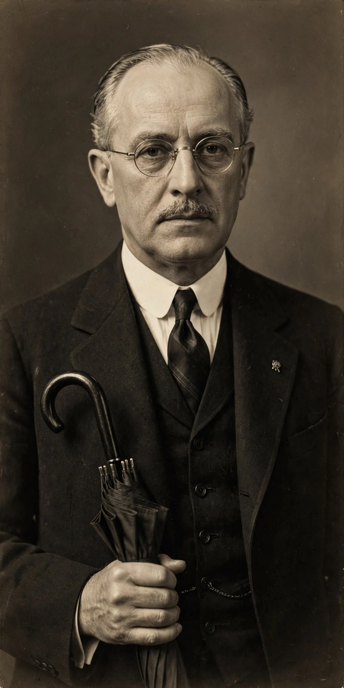

Neville Chamberlain
Arthur Neville Chamberlain (18 March 1869 – 9 November 1940) was a British politician who served as Prime Minister of the United Kingdom from May 1937 to May 1940 and Leader of the Conservative Party from May 1937 to October 1940. He is best known for his foreign policy of appeasement, and in particular for his signing of the Munich Agreement on 30 September 1938, which ceded the German-speaking Sudetenland region of Czechoslovakia to Nazi Germany. In response, the United Kingdom declared war on Germany on 3 September 1939 following the German invasion of Poland.
| Prime Minister | 28 May 1937 – 10 May 1940 |
|---|---|
| Predecessor | Stanley Baldwin |
| Successor | Winston Churchill |
| Born | 18 March 1869, Birmingham, England |
| Died | 9 November 1940 (aged 71), Heckfield, Hampshire |
| Political party | Conservative |
| Father | Joseph Chamberlain |

Early life and business career
Chamberlain was born in Birmingham, the younger son of Joseph Chamberlain, a leading statesman, and was educated at Rugby School and Mason College. After an unsuccessful spell managing a sisal plantation in the Bahamas, he prospered in Birmingham business and local politics, serving as Lord Mayor of Birmingham in 1915.
Political career
Elected to Parliament in 1918, Chamberlain served as Minister of Health and Chancellor of the Exchequer, twice holding the latter office (1923–24 and 1931–37). His tenure at the Treasury was marked by returning Britain to the gold standard and managing the economy through the Great Depression. He succeeded Stanley Baldwin as prime minister in May 1937.
Premiership and appeasement
Domestically, Chamberlain's government pursued reforms in factory conditions, housing clearance and the limits of the working week. In foreign affairs he pursued a policy of appeasement toward Adolf Hitler, culminating in the Munich Agreement of September 1938. On his return to London he famously declared that the agreement represented "peace for our time". After Germany occupied the remainder of Czechoslovakia in March 1939, Chamberlain pledged British support to Poland; when Germany invaded Poland on 1 September 1939, Britain declared war two days later.
Following the failure of the Norwegian campaign, Chamberlain lost the confidence of the House of Commons in the Norway Debate of May 1940 and resigned as prime minister, succeeded by Winston Churchill. He remained in the War Cabinet as Lord President of the Council until ill health forced his resignation in October 1940; he died of bowel cancer the following month.
Legacy
Chamberlain has been widely judged negatively for appeasement, though historians remain divided between the "Guilty Men" verdict of 1940 and later revisionist assessments that stress the military and political constraints he faced.
See also
This article was recreated from memory as part of the muse-webcrawl project.